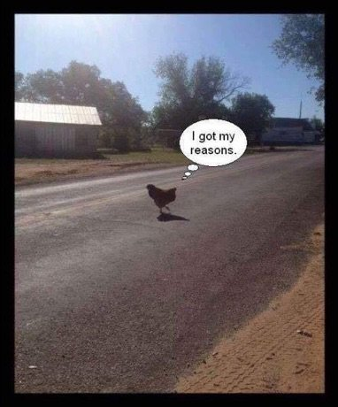

"Explanations
Do not provide
That which is sought."
--Wu Hsin
It comes up all the time, not just in answer to last week’s query asking what people wanted the Mind-Tickler to cover. It comes up in sessions where hurting people are jusssttt about to touch … something new for them…
when boom!- thought snaps in and conversation diverts.
Diverts in a very particular way, to a very particular topic. Diverts to the urgently important….
“Why? Why does this happen?”
And suddenly explanations spew forth in a torrent. “This is because blah blah, it was caused by blah blah and that’s why blah blah.”
Something new has dared to show up for a moment. It brought confusion with it.
And as we all know, confusion is bad.
So quick, wipe it out ASAP with explanations of causation.
That's better. We understand now.
Oh we adore pretending we understand things. Anything. Everything. All of our past, and all possible futures. All about the mind, and feelings, and consciousness, and awareness, and enlightenment.
In fact often it appears the only thing worth having in this existence, is knowing. Since not-knowing clearly will not do.
“Inexplicable” is not welcome.
After all, how can we realize, if we don’t realize what’s happening?
Though somehow we don’t notice that the explanations actually get us nothing.
I mean, once we supposedly know that xyz happens now because mom looked at us cross-eyed back then, then what? Do we simply avoid cross-eyes for the rest of our life, since we know all about that now? Will that make life better?
Besides, explanations are useless for exploring anything new. Why, along with its sister, I already know this, brings nothing except more of the same ol'.
Which is stuckness at its finest. Not to mention boxed in, uncomfortable, protective, and defensive of the status quo.
That's not what we want.
So maybe understanding is not all it’s cracked up to be. Maybe it’s comforting in the moment, while actually creating discomfort for all other moments.
And the thing is, what are we depending on to do the job of comprehending, anyway? What needs two and two put together? What is satisfied by answers, calmed by dots connected?
What does the getting?
Understanding involves the mind. Comprehension requires thought. One can’t “realize” in any way but intellectually.
That’s book learning, not lived learning. That’s parroting, not experiencing.
The search for why solidifies the sense of self, the sense of me, the one who’s got it, the one who takes it in, the one who grasps the concepts in its hot, important little hands.
We are the holders of all knowing. As if we're holding a goldfinch, caging it, chaining it to its little post...
Yay, it’s ours. We got it.
Unsurprisingly, we may start to feel separate from what’s held, separate from what's known, separate from experience.
Which never feels good.
Perhaps because it isn’t accurate.
But oh well, at least the mighty mind understands.
Meanwhile, wouldn’t it be interesting, wouldn't it be different, wouldn't it be unfamiliar and unknown, to see what might happen, see what would be left,
if somehow we were able to experience without trying to get something?
Wouldn’t it be fascinating to see what would be left if we could somehow not try to grab ahold of understanding?
We might be surprised to find that all that’s left is living. Being. One foot in front of the other. Wood chopped, water carried.
Presence.
Not bothering to comprehend what happens, simply being it instead.
Because as it turns out, the present grasps nothing. It’s not holding on to whys, not waiting to get some realizing.
Hello enough-as-it-is.
Hello this-is-it.
Hello, what we’ve supposedly been seeking all this time.
Turns out understanding is not only unnecessary…
It’s in the way.
And settling into the possibility that experience might happen for absolutely no reason whatsoever, then at any point, without explanation,
Something unexpected, something uncontrolled, might fly in or out.
Something surprising, unowned, uncaged, unlimited, and free to roam.
Whatever wants understanding
may just unshackle, and fly the coop.
And there could be nothing left
to care
why.
